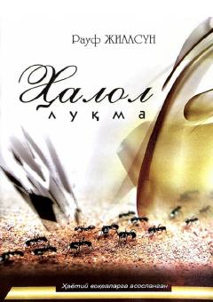

HLHalol rizq va pok yashash yo'lini tanlagan yigitning hayotiy sinovlari haqidagi ta'sirli asar.
Ushbu asar hayotiy voqealarga asoslangan bo'lib, halol yashash, rizqini pokiza yo'llar bilan topish va haromdan saqlanish mavzulariga bag'ishlangan. Bosh qahramon Yusuf jamiyatdagi turli qинғирликлар, manfaatu aldovlar o'rtasida o'z e'tiqodi va vijdonini saqlab qolish uchun kurashadi. Kitob o'quvchilarni halollikka, to'g'rilikka va oxiratni o'ylab yashashga undaydi.